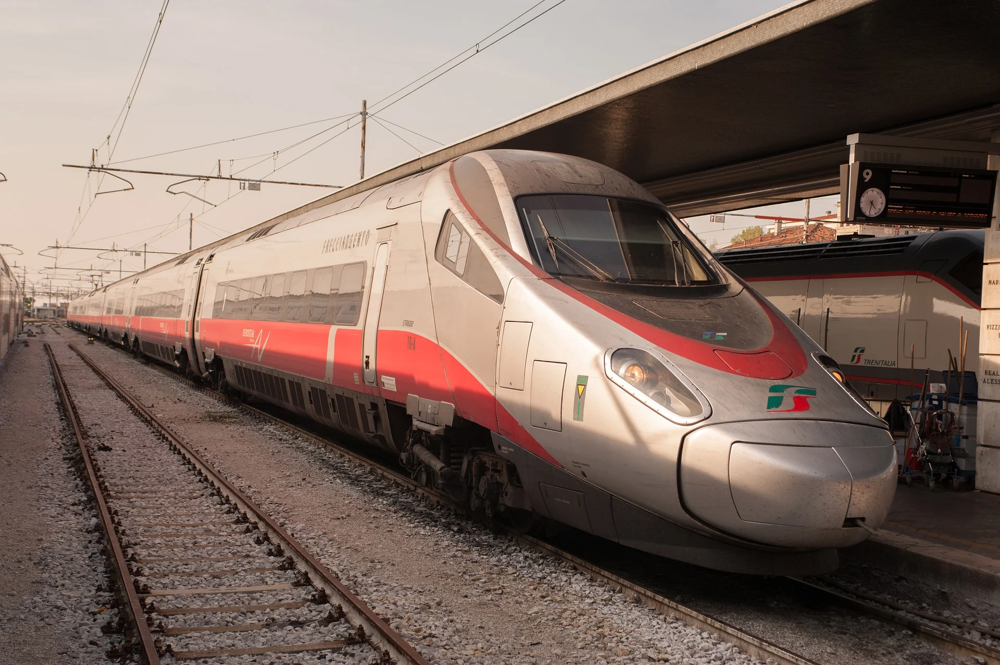
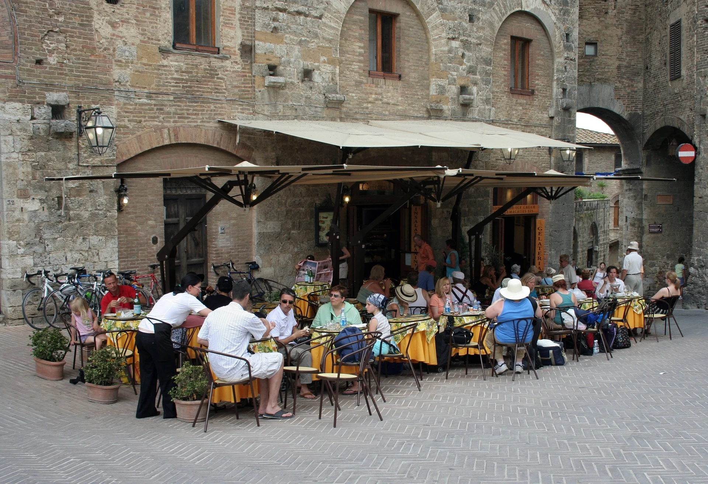
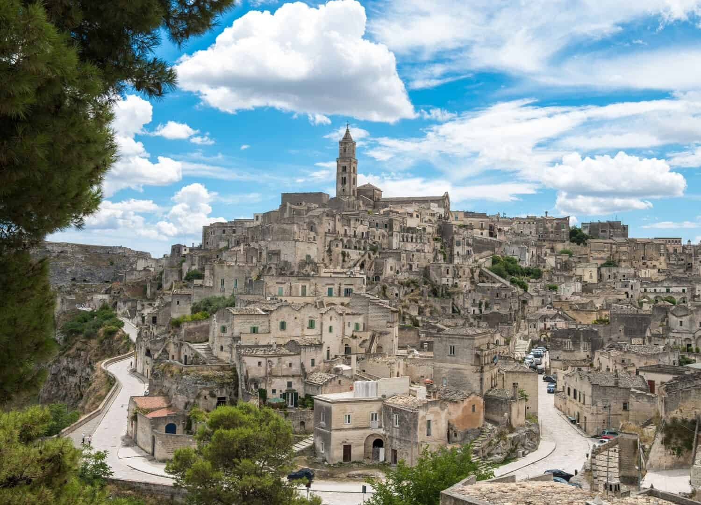
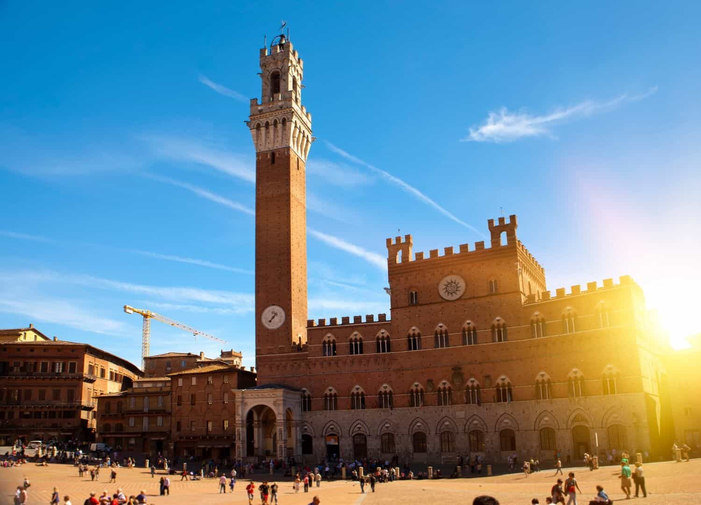
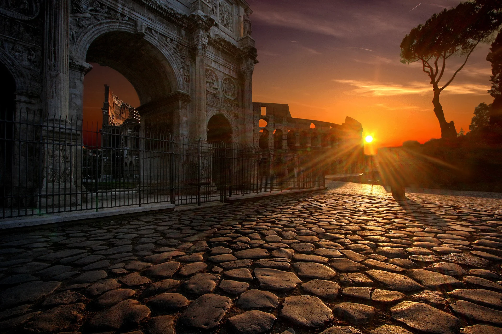

Train travel is one of the best ways to travel around Italy. The train networks are extensive and fairly affordable. Fast trains cost between €30 – €70, while regional slow trains can cost €6 – €30 depending on distance traveled.
The two main train companies are Trenitalia and Italo. It’s important to note that even if you have a Eurail pass in Italy you still must pay a reservation fee – typically of €10.
You may not have to tip 20% for service in Italy, but more often than not you will see a “Coperto” charge on your bill when you dine out. Coperto is a fee or cover charge that you will see at most Italian restaurants.
We’ve found copertos range anywhere from €1.50-4 per person. It’s a form of payment for your waiter and the bread on the table. You don’t have to tip for service on top of this, but it’s an important Italy travel tips especially if you’re trying to eat on a budget.
You may want to think twice about bringing a nice roller bag to Italy. Most Italian towns and cities are filled with old cobbled streets. They are amazingly beautiful and one of the many reasons to love Italy; however, your bag will not love cobblestones.
You also could be looking at a lot of stairs be it around town or actually in your apartment rental or hotel. That’s not to say you absolutely shouldn’t bring a suitcase to Italy if you want though. I personally have traveled to Italy two times with a suitcase and all was well, I was just wishing for a duffel bag instead.
This is going to be a hard one, but when you’re in the Italian cities and towns it’s best to try and blend. Take off the baseball cap, put away the big map, no outdoor clothes, fanny packs, bulky cameras, and take note of your surroundings.
Not only will this make you less vulnerable to scams, but you may get better prices at normal shops. It’s what I like to call being an “aware tourist.” Italy is famous for its pickpockets and they target the easiest looking mark. Granted, we have never seen or experienced any of that in Italy.
If I could give you just one Italy travel tip for food it would be to venture away from tourist sites. The closer you are to a major tourist sight; like the Colosseum, Vatican, tower of Pisa, the Duomo, the higher the prices will be at restaurants and typically the worse the food.
I recommend walking a few streets back from the main attraction to find more affordable and perhaps more authentic food. We also love to do a bit of research online to find some good places we can pick from for the day